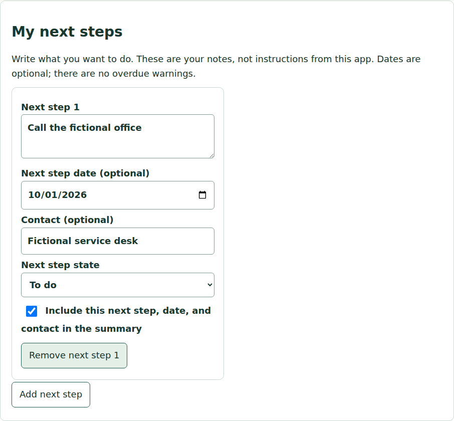
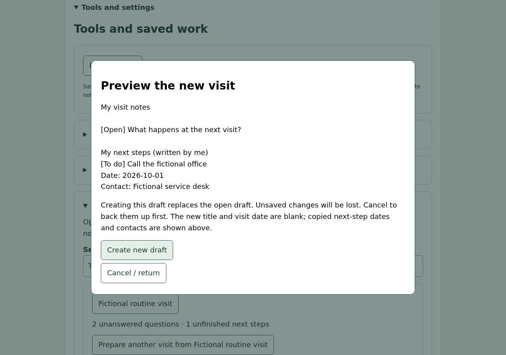
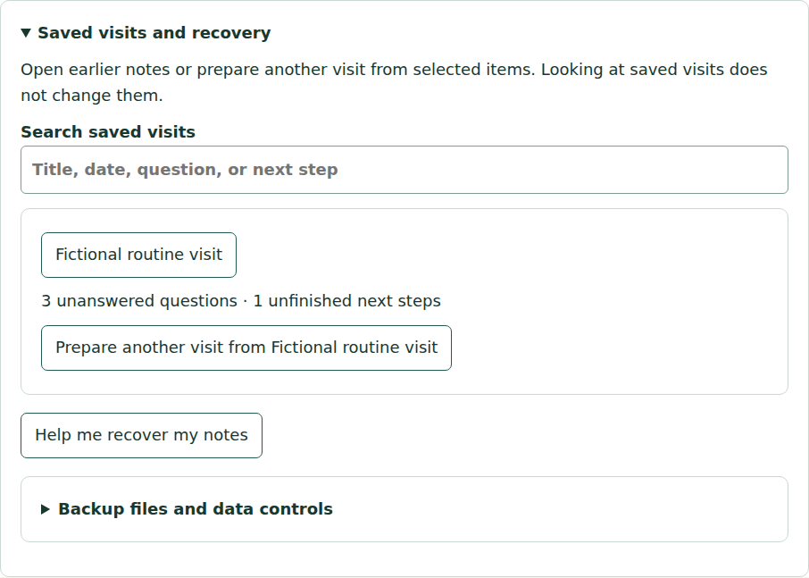

01 / 12
The product decision
Finish the work around the appointment—not just the notes taken during it.
My Visit Notes now connects preparation, questions during a conversation, personal next steps, and preparation for another visit. It stays a small browser app. No account, recording, automated medical advice, or remote processing is needed.
The release decision is about working software. We have not established that people prefer it to paper or their usual notes app. No participants are required for this engineering goal, and no participant results are claimed.
02 / 12
The gap this version addresses
The first version could preserve unanswered questions, but did not provide a separate place for actions or a deliberate way to bring selected items into another appointment. Someone returning later would have to locate and copy those details themselves.
This version adds those missing steps. The product hypothesis is that keeping questions, actions, and later visits connected may reduce that repeated work. That is a design hypothesis, not a finding from an app trial.
The earlier research informed the choice of appointment communication as a task. It did not establish demand for this particular app. The original product decision records that distinction.
03 / 12
Who the first flow is designed for
The starting audience is adults who already use written appointment questions and sometimes lose their place or leave with things still to ask. The original product choice focused on autistic adults. The app asks for no diagnosis, name, or medical history.
People can use the written flow independently or with help they choose. This release does not claim to meet every reading, language, motor, or communication need. There is no speech output, symbol system, caregiver access, or special version for each diagnosis.
We are extending one task before widening the audience or adding another product.
04 / 12
One complete journey
- Prepare. Write questions and optionally choose communication requests.
- Use. Keep a place in the conversation. Only the person marks a question answered.
- Review. Separate answers, unanswered questions, and personal next steps.
- Return. Find the saved visit and unfinished items, including while offline after setup.
- Choose. Select items for another visit and inspect the proposed draft.
- Continue. Save a new visit. The earlier visit remains unchanged.
For a concrete example, imagine leaving with two unanswered questions and a plan to call a service. A week later, the person can find the call and move only the questions they still want to ask into another visit. This is a fictional example.
05 / 12
Next steps remain the person’s own words
A next step has a description, an optional date, an optional contact, and one of three states: To do, Done, or No longer needed. The person can change their mind. Removing an item requires confirmation.
The app does not infer an action from an answer note or suggest treatment. It does not send reminders or label items overdue. Dates appear only where the person recorded them.
Each action has its own unchecked sharing control. Including it also includes its date and contact, all shown in the exact summary preview.

06 / 12
Carry forward only what was chosen
Preparing another visit is a two-stage choice: select items, then review the resulting draft. Nothing is checked at the start. The app never modifies the source visit.
| Earlier content | New draft |
|---|---|
| Selected question text | New question, marked Open |
| Selected next step | New item, marked To do; selected item’s date/contact shown in preview |
| Private preparation and answer notes | Never copied in this flow |
| Communication requests | Not copied; choose saved requests separately |
| Visit title and date | Blank, ready for the new appointment |

The final confirmation warns that creating the draft replaces the open draft. Cancel to back up unsaved work first. The new visit itself stays temporary until saved.
07 / 12
Three separate choices for communication requests
Save a request. Select text and confirm keeping it on this device for future visits.
Use it in a visit. Select saved text, preview it, and add it to the current visit. Nothing is applied automatically.
Share it. Select it again for an outgoing summary. Applying a saved preference does not grant sharing permission.
Clearing reusable requests leaves existing visit content unchanged. Anyone using the same browser may see saved requests; this is not an encrypted private account.
08 / 12
Find earlier work without changing it
The saved list shows titles, dates, unanswered-question counts, and unfinished next-step counts. Search covers the title, date, questions, actions, and action contacts. It deliberately does not search private preparation or answer notes.
Searching or opening a saved visit performs no write. This matters because returning to look at an old visit should not change its contents or state.

09 / 12
Recover without overwriting newer work
An individual backup protects the open visit, including private notes. A library backup protects all saved visits and saved requests. The library notice explicitly says it does not include an unsaved draft or failed edits.
Library imports are checked before any write. The preview identifies identical visits to skip, new visits to add, and conflicting identifiers to preserve as separate copies. The open draft stays untouched. Repeating the same import does not keep adding identical copies.
The current app reads version 1 visits and backups. Opening old data does not rewrite it; the next deliberate saving action writes version 2. Tests use the actual previous app to exercise the offline update and to check that older code refuses to overwrite upgraded data.
Files are unencrypted JSON. Imports are limited to 10 MB. Browser clearing can still remove saved data; a downloaded backup is the recovery method. Close old app tabs after saving to let an update take over.
10 / 12
What the checks establish
24/24 existing browser scenarios and 15/15 new browser scenarios passed in their recorded runs. Script errors: 0. These counts come from the saved result files, not an estimate.
The new suite covers selected next-step sharing, read-only search, carry-forward, reusable requests, duplicate and conflicting library imports, failed writes, concurrent tabs, delayed edits, a real old-version update, offline browser restart, keyboard controls, and narrow layouts.
The model tests separately inspect format validation, note exclusion, state resets, search, and repeated imports. The unchanged communication-card tests remain part of the regression check.
Existing browser results · New browser results · Commands and limits · Requirement-by-requirement evidence
Recorded new-suite runtime: 145.0.7632.6 Chromium; v18.19.1 Node. Run date: 2026-09-16T21:53:46.138Z. This is not a screen-reader certification or a claim about all devices.
11 / 12
What remains unknown
No one has yet compared the app with their own appointment-note method. We do not know whether the extra preparation is worth it, whether people want another app, whether it helps during interruptions, or whether they would return to it over time.
No payment, adoption, clinical benefit, or reduced anxiety claim is supported. Automated keyboard and layout tests are narrower than a full accessibility evaluation. Screen-reader review and additional devices remain untested.
These unknowns do not block the agreed engineering release. They should limit product claims and guide any later review, if one is requested.
12 / 12
The handoff
The deliverable is a working app, a detailed product plan, fictional walkthroughs, repeatable checks, this presentation, and a downloadable release with file hashes.
Open My Visit Notes · Read the product requirements · Follow the fictional walkthroughs · Inspect the build review
For a local release, extract the archive, serve its root folder with the command below, and open the app address from the README. No package installation is needed to run it. Development tests use the parent project’s Playwright installation.
python3 -m http.server 8765 --bind 127.0.0.1
Release archive · Checksums · Start instructions and recovery help
Do not add accounts, automated advice, recording, or diagnosis-specific editions as part of this handoff. The agreed goal is the complete appointment-to-appointment journey.